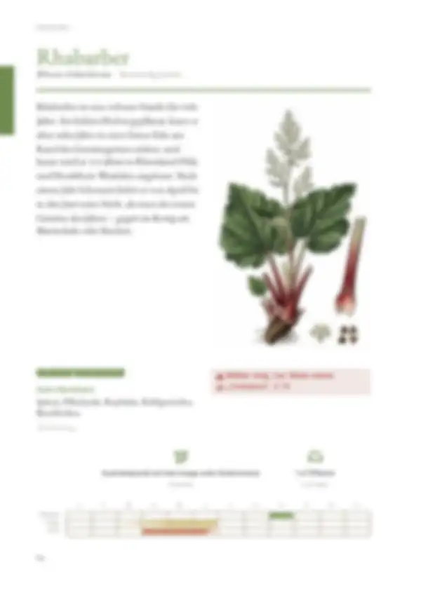
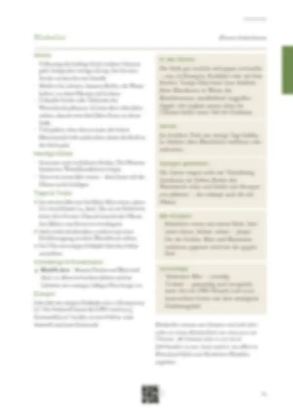

Tippe eine Quelle an, um zu sehen, wo sie verwendet wird – oder tippe auf einen Bereich der Seite.
8 Quellen dieser Doppelseite
Original · abgerufen am 27.10.2026 · ● belegtVerwendet in: Zusammenfassung (Seite allgemein), Sicherheitshinweis „Oxalsäure“, In der Küche, Mit Kindern, Geschichte
Original · abgerufen am 26.10.2026 · ◐ ErfahrungVerwendet in: Zusammenfassung (Seite allgemein), Piktogramm-Leiste, Monatsleiste, Anbau, In der Küche, Anbau, Punkt 1, Anbau, Punkt 2, Anbau, Punkt 3, Vorrat, Anbau, Punkt 4, Häufige Fehler, Saatgut gewinnen, Häufige Fehler, Punkt 1, Häufige Fehler, Punkt 2, Tipps & Tricks, Tipps & Tricks, Punkt 1, Mit Kindern, Tipps & Tricks, Punkt 2, Tipps & Tricks, Punkt 3, Schädlinge & Krankheiten, Sortentipp, Schädlinge & Krankheiten, Punkt 1, Düngen, Düngen, Punkt 1, Geschichte
Original · abgerufen am 28.10.2026 · ● belegtVerwendet in: Zusammenfassung (Seite allgemein), Monatsleiste, Tipps & Tricks, Tipps & Tricks, Punkt 1, Sortentipp, Düngen, Düngen, Punkt 1, Geschichte
Original · abgerufen am 27.10.2026 · ● belegtVerwendet in: Zusammenfassung (Seite allgemein), Sicherheitshinweis „Oxalsäure“, Monatsleiste, In der Küche, Vorrat, Mit Kindern, Geschichte
Original · abgerufen am 28.10.2026 · ● belegtVerwendet in: Zusammenfassung (Seite allgemein), Sicherheitshinweis „Oxalsäure“, Mit Kindern, Geschichte
Original · abgerufen am 28.10.2026 · ◐ ErfahrungVerwendet in: Zusammenfassung (Seite allgemein), Piktogramm-Leiste, Geschichte
Original · abgerufen am 26.10.2026 · ● belegtVerwendet in: Sicherheitshinweis „Oxalsäure“
Original · abgerufen am 26.10.2026 · ○ ÜberlieferungVerwendet in: Nachbarn
● belegt (Versuch, Fachinstitut) · ◐ Erfahrung (Beratung, Praxis) · ○ Überlieferung. Abschnitte ohne eigene Quellenangabe in den Daten zeigen die Quellen der ganzen Seite („Seite allgemein“).